📊 OpenRouter 100 万亿 Tokens 实证研究，人们到底在用 AI 做什么？
OpenRouter's 100 trillion tokens: what are people actually doing with AI?
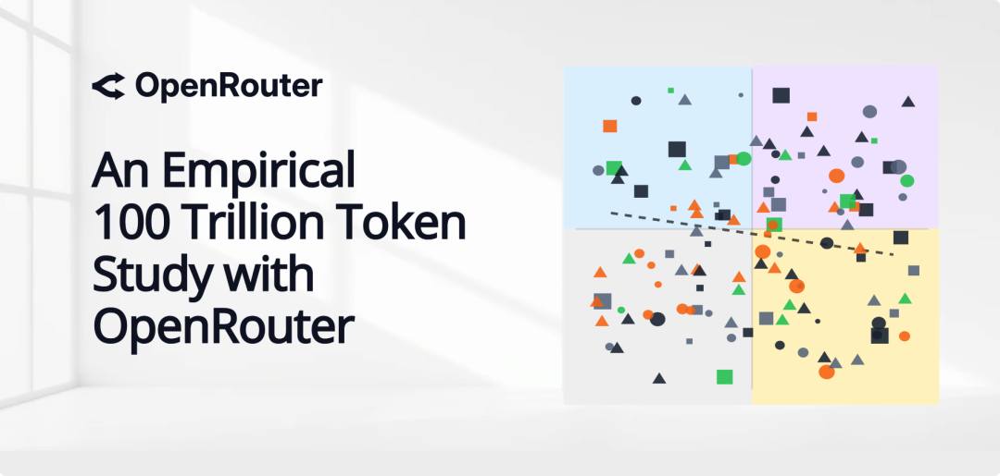
2024 年，大模型的玩法很简单simplicity[sɪmˈplɪsɪti] n. 简单,简易;朴素;直率,单纯：你问，它答。一句输入import[ˌɪmˈpɔrt] v. 进口,输入，一段输出，仅此而已。
但整个altogether[ˌɔltəˈgɛðər] n. 整个；裸体 2025 年，一切都变了。推理模型成为主流，开源阵营快速跟进，用户开始让 AI 写代码、扮演虚拟角色、甚至调用工具完成accomplish[əˈkɑmplɪʃ] v. 完成；实现；达到复杂任务。
大模型的使用方式正在经历一场巨大的enormous[ɪˈnɔrmɪs] adj. 庞大的，巨大的；凶暴的，极恶的变化。
a16z 上个月发布了一份报告inform[ˌɪnˈfɔrm] v. (of,about)通知,告诉,报告，基于 OpenRouter 平台的 100 万亿 token 使用数据。OpenRouter 是一个连接数百个大模型的推理平台，这份数据覆盖了 60 多个模型提供商provider[prəˈvaɪdə] n. 提供商、300 多个活跃模型。
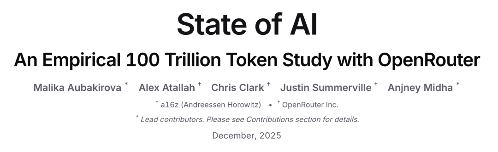
从这些数据里，我们能看到一些和直觉完全不同的diverse[dɪˈvərs] adj. 多种多样的,不同的发现：
1. 开源模型的份额在过去一年稳步攀升，目前已经占据inhabit[ˌɪnˈhæbət] v. 栖息；居住于；占据了约 30%的市场。这个数字看起来不大，但考虑到一年前开源模型还在边缘位置，这个增速accelerate[ækˈsɛlərˌeɪt] v. 使加速，使增速，促进；加速值得关注。DeepSeek、Qwen、Llama 等开源模型不再只是「便宜的替代品」，它们正在成为真正的authentic[əˈθɛnɪk] adj. 真正的，真实的；可信的生产力工具。
2. 让人意外的accidental[ˌæksəˈdɛnəl] adj. 偶然的；意外的；无意中的发现是：开源模型的第一大使用场景，并不是写代码或者回答问题，而是角色扮演。超过一半的开源模型 token 都被用在了虚拟角色对话、互动叙事、游戏场景这类娱乐amuse[əmˈjuz] v. 娱乐；消遣；使发笑；使愉快性质的任务上。
3. 与此同时，推理inference[ˈɪnfərəns] n. 推理；推论；推断模型的份额在 2025 年突破了 50%。这意味着，大多数bulk[bəlk] n. 体积，容量；大多数，大部分；大块用户已经不满足于让 AI 回答问题，而是希望 AI 能够「处理问题」。从简单的gut[gət] adj. 简单的；本质的，根本的；本能的，直觉的文本生成到多步推理、工具调用、任务规划，AI 的使用方式正在从「对话」转向「执行」。
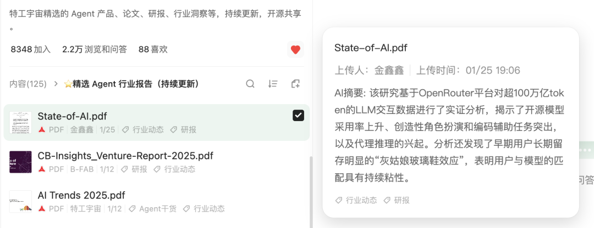

以下是关于concerning[kənˈsərnɪŋ] prep. 关于；就…而言报告精华的总结：
1. 中国开源模型逆袭，份额攀升至 30%
2024 年底，中国开源模型在整体市场中的占比微乎其微remote[rɪˈmoʊt] adj. 偏僻的；远的,遥远的；疏远的；渺茫的，微乎其微的，周度占比最低仅1.2%。但到 2025 年下半年，这一比例迎来大幅增长，部分甚至接近approximate[əˈprɑksəˌmeɪt] v. (to)接近 30%。
这个变化的转折点hinge[hɪnʤ] n. 铰链，折叶；关键，转折点；枢要，中枢是 2024 年 12 月。DeepSeek V3 的发布引发了第一波开源模型的使用高潮，随后 DeepSeek R1、Qwen 3、Kimi K2 等模型接连上线，每一次发布都带来了明显的conspicuous[kənˈspɪkjuəs] adj. 显眼的,明显的使用量跃升。更重要的crucial[ˈkruːʃl] adj. 重要的；决定性的；定局的；决断的是，这些使用量并没有在发布热度过后回落，而是持续留存了下来。
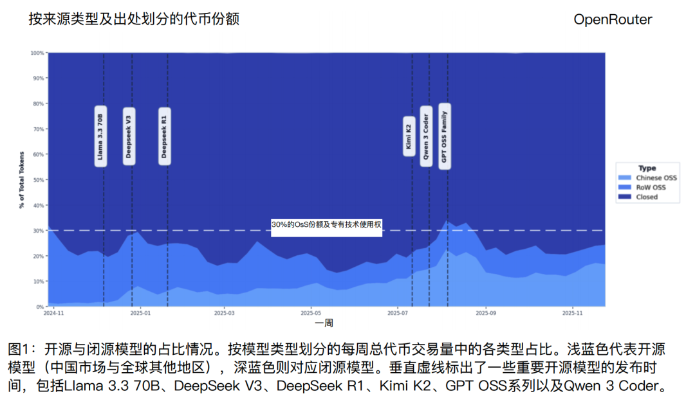
开源阵营内部的inner[ˈɪnər] adj. 内部的， 里面的；内心的竞争格局也在发生变化。
一年前，DeepSeek 几乎占据occupation[ˌɑkjəˈpeɪʃən] n. 职业,工作；占领,占据了开源市场的半壁江山。到了 2025 年底，没有任何单一模型的份额超过exceed[ɪkˈsid] v. 超过,胜过；越出 (限制、规定) 25%。市场从「Deepseek 一家独大」变成了「群雄并起」，用户有了更多选择，也更愿意在不同differ[ˈdɪfər] v. 使…相异；使…不同模型之间切换。
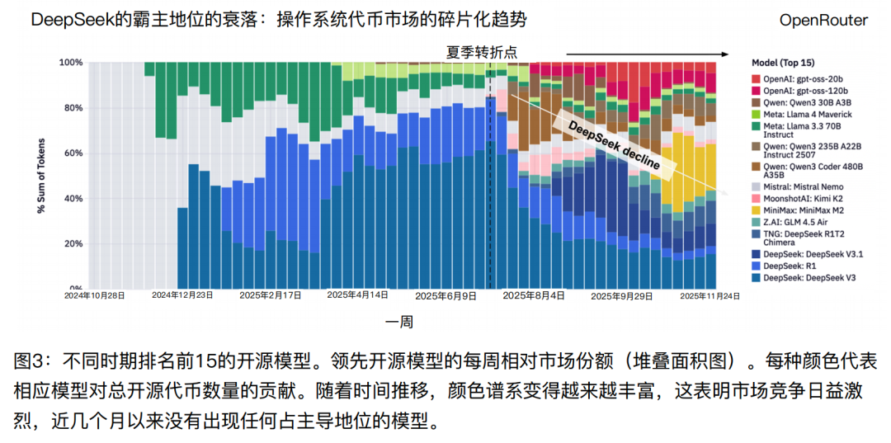
这对开源模型开发者来说是个好消息，也是个挑战dare[dɛr] n. 挑战；挑动。
好消息是，一个有竞争力的开源模型可以在几周内获得acquire[əkˈwaɪər] v. 获得；取得；学到；捕获大量用户。挑战是，如果停止cease[sis] v. 停止；终了迭代，用户会很快流向更新更强的竞争对手。
2. 角色扮演是开源模型的第一大场景，使用超过excel[ɪkˈsɛl] v. 超过；擅长 50%
在所有使用场景中，角色扮演的占比高得出乎意料revelation[ˌrɛvəˈleɪʃən] n. 启示；揭露；出乎意料的事；被揭露的真相。在开源模型的使用中，超过 52% 的 token 被用在了角色扮演相关的任务assignment[əˈsaɪnmənt] n. 任务；作业上。这个比例proportion[prəˈpɔrʃən] n. 部分；比例；均衡,相称远超编程、翻译、问答等其他场景。
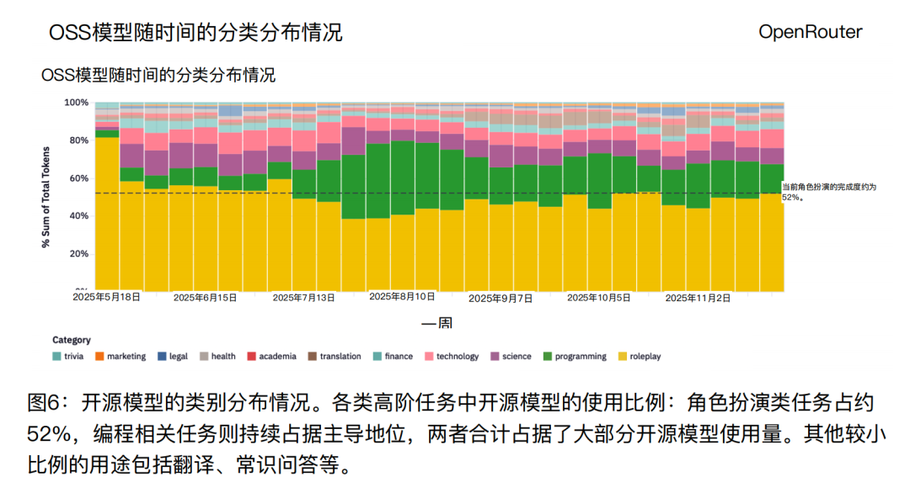
角色扮演的具体内容包括互动小说、虚拟角色对话、桌游场景模拟analog[ˈænəˌlɔg] n. 类似物； 模拟、粉丝创作等。用户把大模型当作一个可以无限展开对话的虚拟伙伴ally[ˈælaɪ] n. 同盟国；伙伴；同盟者；助手，让它扮演小说里的角色、游戏里的 NPC，或者干脆创造一个全新的虚构人物。
从时间趋势来看，角色扮演的份额在 2025 年全年保持稳定，没有出现明显的distinct[dɪˈstɪŋkt] adj. 明显的；独特的；清楚的；有区别的下滑。
开源模型在这个场景中特别受欢迎greeting[ˈɡriːtɪŋ] v. 致敬，欢迎（greet的现在分词），原因很直接。商业模型通常有严格的rigid[ˈrɪdʒɪd] adj. 严格的；僵硬的，死板的；坚硬的；精确的内容审核机制，对涉及暴力、成人内容、敏感话题的对话会进行限制。开源模型则可以被用户自行部署array[əreɪ] v. 排列，部署；打扮和微调，在内容尺度上有更大的自由度。这种灵活性对创意写作和虚拟角色扮演的用户来说非常有吸引力magnetic[mægˈnɛtɪk] adj. 地磁的；有磁性的；有吸引力的。
如果说角色扮演是开源模型的主场，那编程就是整个大模型市场增长最快的swift[swɪft] adj. 快的；迅速的；敏捷的；立刻的战场。
2025 年初，编程相关任务在所有大模型使用中的占比约为 11%。到了年底，这个数字已经超过overhaul[ˈoʊvərˌhɔl] vt. 彻底检修；赶上， 超过 50%。编程从一个细分场景变成了最主流的使用方式alike[əˈlaɪk] adv. 以同样的方式；类似于。
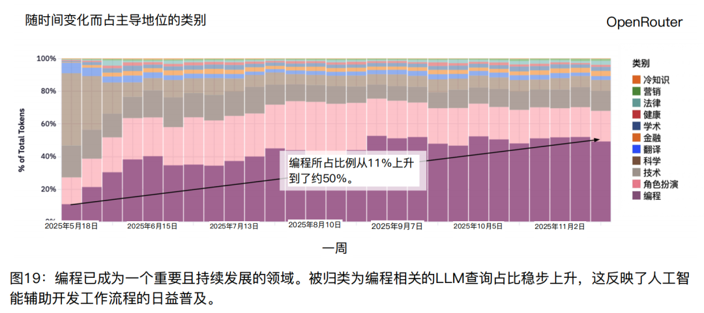
这个变化背后，是越来越多开发者开始把大模型融入日常工作harness[ˈhɑrnɪs] n. 马具；甲胄；挽具状带子；降落伞背带；日常工作：越来越多的程序员开始在日常工作中依赖大模型进行代码生成、调试、文档编写。
在编程这个场景中，Anthropic 的 Claude 系列占据occupy[ˈɑkjəˌpaɪ] v. 占,占用；占据,占领；使忙碌,使从事了绝对优势。在相当长的时间里closet[ˈklɑzət] v. 把…引进密室会谈；把…关在小房间里，Claude 在编程任务中的份额超过 60%。但这个格局正在松动，2025 年下半年，OpenAI 和 Google 的份额都有所上升arise[əraɪz] v. 出现；上升；起立，一些新兴的开源模型也开始切走一部分市场。
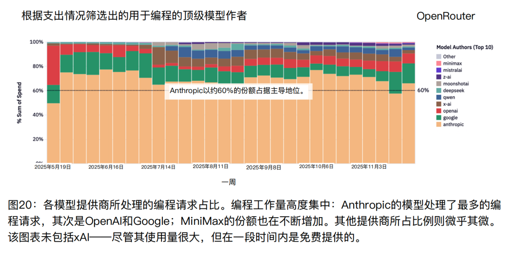
编程场景的竞争compete[kəmˈpiːt] v. 竞争；争夺，竞争之所以激烈，是因为这是一个高价值、高频次的使用场景。谁能在编程场景中占据优势，谁就能锁定一批batch[bæʧ] n. 一批,一组,一群高价值的付费用户：开发者每天都要写代码，对模型质量的要求也很高。
数据还显示，编程相关的请求通常包含comprehend[ˌkɑmpriˈhɛnd] v. 理解；包含；由…组成更长的上下文。平均而言，编程任务的输入input[ˈɪnˌpʊt] v. [自][电子] 输入；将…输入电脑 token 数是其他任务的 3 到 4 倍。这意味着spell[spɛl] v. 拼，拼写；意味着；招致；拼成；迷住；轮值编程用户往往需要把整个代码库或者长段的文档喂给模型，对模型的长上下文能力提出了更高的要求。
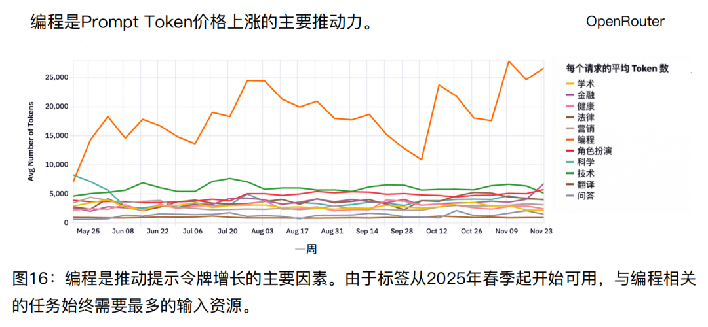
4、推理模型成为主流，份额超过 50%大模型市场有一个分水岭时刻，很多人可能没意识到alert[əˈlərt] v. 警告；使警觉，使意识到它有多重要。
2024 年 9 月，OpenAI 发布了 o1 推理模型 preview 版本，而 o1 和之前的模型有本质区别differentiate[ˌdɪfərˈɛnʧiˌeɪt] v. 区分，区别。它不是简单地根据输入生成输出，而是在内部bosom[ˈbʊzəm] n. 胸；胸怀；中间；胸襟；内心；乳房；内部进行多步推理、规划和验证，然后才给出最终答案。
这种「思考后再回答」的模式很快获得了用户的认可acceptance[əkˈsɛptəns] n. 正式接受；接纳；接受，赞同，赞成，认可。到 2025 年底，推理模型在所有大模型使用中的份额已经超过 50%。
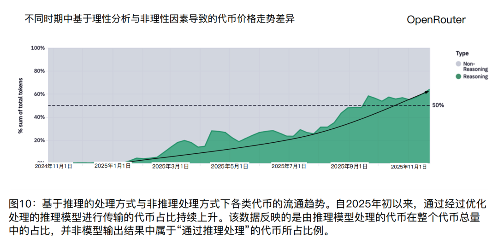
推理模型的兴起带动了另一个趋势drift[drɪft] n. 漂流，漂移；趋势；漂流物： 工具调用的普及。
越来越多的请求涉及到让模型调用外部工具、访问数据库database[ˈdætəˌbeɪs] n. 数据库、执行 API 请求，模型变成了一个可以执行任务的智能体。
数据显示，工具调用相关的请求在 2025 年全年保持了稳定的stable[ˈsteɪbəl] adj. 稳定的；牢固的；坚定的增长趋势。Claude 和 Gemini 系列在工具调用场景中表现突出distinguish[dɪˈstɪŋgwɪʃ] v. 区分；辨别；使杰出，使表现突出，是这个赛道的主要玩家。
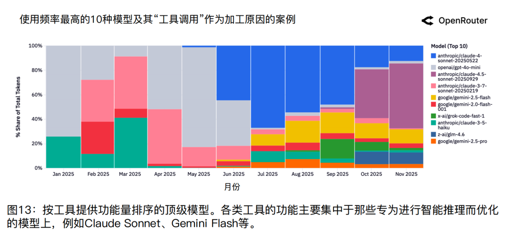
5、中型模型成为最爱，小模型份额下降decline[dɪˈklaɪn] n. 下降；衰退；斜面
过去一年，大模型市场出现了一个有趣的comic[ˈkɑmɪk] adj. 喜剧的；滑稽的；有趣的现象：
中型模型成了最受欢迎的选择，而小型模型不再受用户喜爱adore[əˈdɔr] v. 崇拜；爱慕；喜爱；极喜欢。
研究enquiry[ɪnkˈwaɪˌri] n. 打听， 询问；调查， 研究团队把模型按参数量分成了三档：小型（150 亿参数以下）、中型（150 亿到 700 亿参数）、大型（700 亿参数以上）。数据显示，中型和大型模型的使用份额都在持续上升ascend[əˈsɛnd] v. 上升；登高；追溯，而小型模型份额则在下滑。
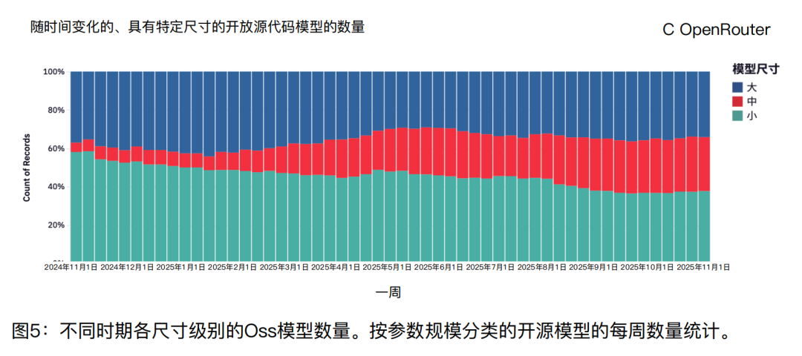
这个趋势tendency[ˈtɛndənsi] n. 倾向，趋势；癖好的背后是用户需求的升级。早期用户可能likelihood[ˈlaɪkliˌhʊd] n. 可能性，可能只是想试试 AI 能做什么，用小型模型就够了。但当 AI 真正嵌入工作流程之后，用户开始追求ambition[æmˈbɪʃən] v. 追求；有…野心更高的输出质量和更强的推理能力，这些是小型模型难以提供的。
中型模型成了一个甜蜜honey[ˈhəni] n. 蜂蜜；宝贝；甜蜜点。它既比小型模型更强大，又比大型模型更便宜cheaper[ˈtʃiːpə] adj. 更便宜、更快。Qwen2.5 Coder 32B、Mistral Small 3 这类中型模型在过去一年获得acquisition[ˌækwɪˈzɪʃn] n. 获得物，获得；收购了快速增长，填补了市场中间地带的空白。
大型模型市场则呈现出多元化的格局landscape[ˈlændskeɪp] n. 格局。没有哪个单一的大型模型占据绝对主导地位，Qwen3 235B、GLM 4.5、GPT-OSS-120B 等模型都有各自的respective[rɪˈspɛktɪv] adj. 各自的,各个的用户群体。用户会根据不同任务选择elect[ɪˈlɛkt] v. 选举,推选；选择,作出选择不同的大型模型，而不是只认准一家。
6、不同模型提供furnish[ˈfərnɪʃ] v. 供应,提供；装备,布置商使用画像不同有意思的是，不同模型提供商的用户在使用场景上呈现出截然不同的画像。
Anthropic 的 Claude 用户几乎practically[ˈpræktɪkəli] adv. 实际地；几乎；事实上都是程序员。编程和技术类任务占了 Claude 使用量的 80%以上，角色扮演几乎可以忽略neglect[nɪˈglɛkt] v. 忽视，忽略不计。
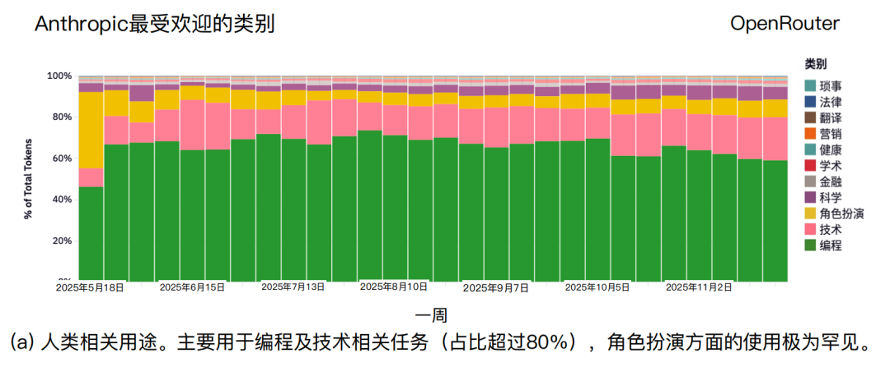
Google 的模型用户则更加多元。翻译、科学研究investigate[ˌɪnˈvɛstəˌgeɪt] v. 调查；研究、技术问答都有一定比例，没有哪个场景占据绝对主导。
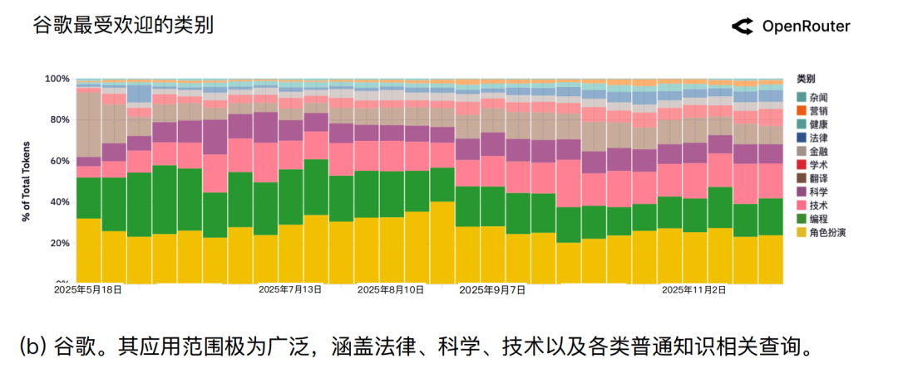
DeepSeek 在消费者市场的品牌认知cognition[kɒɡˈnɪʃn] n. 认知显然比在开发者市场更强。DeepSeek 的用户画像和 Claude 几乎是镜像关系bearing[ˈbɛrɪŋ] n. [机] 轴承；关系；方位；举止。角色扮演和休闲对话dialog[ˈdaɪəlɔg] n. (dialogue)对话,对白占了 DeepSeek 使用量的大部分，编程和技术任务的占比相对较低。
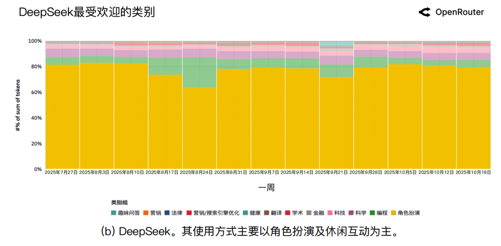
这些差异说明define[dɪˈfaɪn] v. 确定，说明，界定；给…下定义，解释，大模型市场并不是一个同质化的市场。
不同用户有不同的需求，不同模型在不同场景中各有优势superiority[ˌsupɪriˈɔrɪti] n. 优越，优势；优越性。
7、模型的早期用户具备：黏性效应
研究团队发现了一个有趣的现象：模型的早期用户往往会成为最忠诚的loyal[lɔɪəl] adj. (to)忠诚的,忠贞的用户。
以 Claude 4 Sonnet 为例，
2025 年 5 月的早期用户群体在 5 个月后仍然保持conservation[ˌkɑnsərˈveɪʃən] n. 保存，保持；保护了约 40%的留存率。
而后来afterward[ˈæftərwərd] adv. 以后，后来加入的用户群体，留存率则明显更低。类似的analogue[ˈænəˌlɔg] adj. 类似的；相似物的；模拟计算机的模式也出现在 Gemini 2.5 Pro 等模型上。
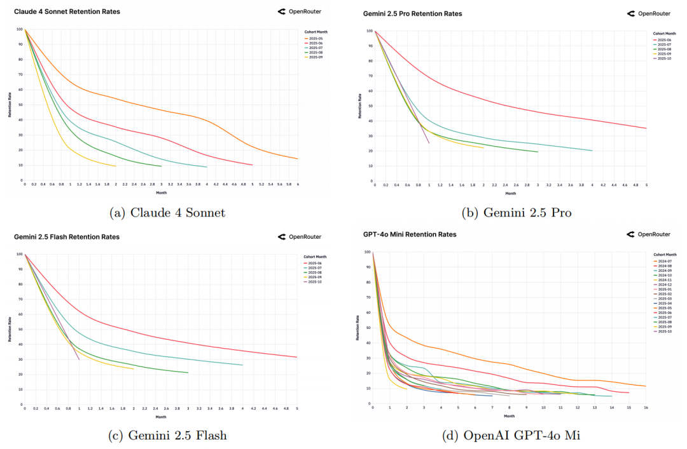
研究团队把这种现象称为「灰姑娘bride[braɪd] n. 新娘；姑娘，女朋友玻璃鞋效应」。
在一个快速迭代的市场中，总有一些用户的需求长期得不到满足cater[ˈkeɪtər] v. (for)提供饮食及服务；(for/to)满足,迎合。当一个新模型恰好解决了这些需求时，这些用户就会形成强烈的fierce[fɪrs] adj. 凶猛的,残忍的；狂热的,强烈的依赖，把自己的工作流程、数据管道、使用习惯都建立在这个模型之上。一旦建立constitute[ˈkɑnstəˌtut] v. 组成，构成；建立；任命了这种依赖，切换成本就变得很高，用户也就不愿意离开了。
这个效应的另一面是：如果一个模型在发布时没能抓住这批「刚需用户」，后面就很难再建立起稳定的steady[ˈstɛdi] adj. 稳定的；不变的；沉着的用户群体。Gemini 2.0 Flash 和 Llama 4 Maverick 的数据就呈现出这种模式，所有用户群体的留存曲线curve[kərv] n. 曲线,弯曲(物)都很低，没有形成任何高黏性的核心用户群。
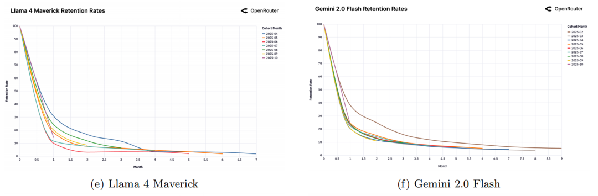
对模型开发者来说，这意味着spelling[ˈspɛlɪŋ] v. 拼写；意味着（spell的ing形式）；迷住发布时机和初始产品力至关重要：
能够在发布窗口期抓住collar[ˈkɑlər] v. 抓住；给…上领子；给…套上颈圈一批核心用户，就能为后续的增长打下基础。
8、用户输入的 Prompt 越来越复杂complication[ˌkɑmpləˈkeɪʃən] n. 并发症；复杂；复杂化；混乱
过去一年，用户给模型的提示cue[kju] n. 提示，暗示；线索词输入变得越来越长。
平均输入 token 数从一年前的约 1500 个增长到了现在presently[ˈprɛzəntli] adv. 一会儿,不久；现在,目前的超过 6000 个。
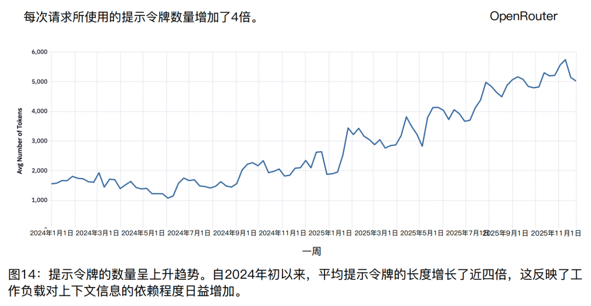
输出 token 数也有类似的comparable[ˈkɑmprəbəl] adj. 类似的，相当的；可相比的增长趋势，从约 150 个增长到了约 400 个。
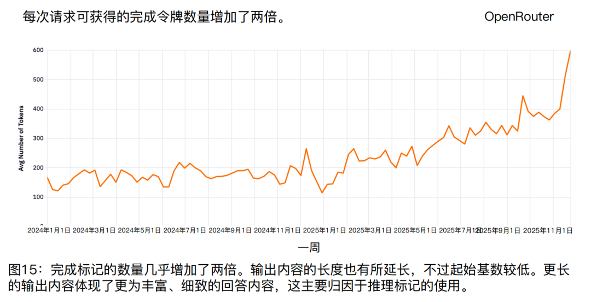
这个变化反映的是使用场景的复杂化perplex[pərˈplɛks] v. 使困惑，使为难；使复杂化：
输入变长，通常意味着任务本身也变复杂complicate[ˈkɑmpləˌkeɪt] v. 变复杂了。
编程任务是推动这个趋势的主要力量，用户或者编程 IDE 不再只是问一个简单的问题，而是会提供大量的extensive[ɪkˈstensɪv] adj. 广泛的；大量的；广阔的背景资料、代码片段、文档内容，然后要求模型在这
些上下文的基础上进行分析analyze[ˈænəˌlaɪz] vt. 分析； 分解和推理，这对模型的长上下文处理能力是个考验。
9、模型价格和成本costing[ˈkɒstɪŋ] n. 成本几乎无关
最后一个发现discover[dɪˈskəvər] v. 发现可能会让很多人意外：
大模型的价格和使用量之间几乎没有scarce[skɛrs] adv. 仅仅；几乎不；几乎没有相关性。
研究团队把所有模型按价格和使用量画成了一张散点图，发现discovery[dɪˈskʌvəri] n. 被发现的事物；发现趋势线几乎是平的。便宜的模型不一定使用量大，贵的模型也不一定使用量小。
价格下降 10%，使用量只上升climb[klaɪm] v. 爬；攀登；上升 0.5% 到 0.7%。
这说明大模型市场还没有变成一个纯粹的sheer[ʃɪr] adj. 绝对的；透明的；峻峭的；纯粹的价格竞争市场。用户选择模型时考虑的是能力、可靠性reliability[rɪˌlaɪəˈbɪləti] n. 可靠性、响应速度等多个维度，价格只是其中一个因素。
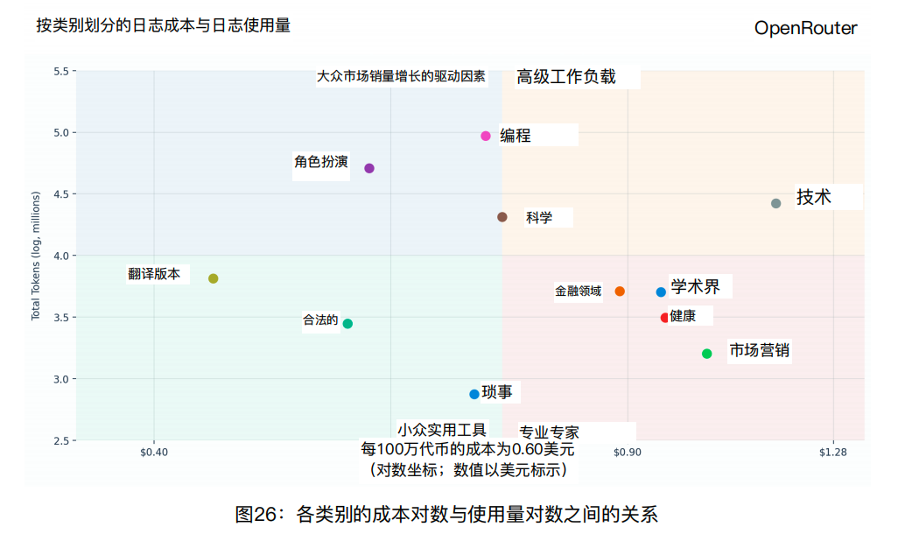
但有意思的是，价格和使用场景之间的关系非常deadly[ˈdɛdli] adv. 非常；如死一般地明显。编程和技术类任务的用户愿意为更好的preferable[ˈprɛfərəbəl] adj. 更好的，更可取的；更合意的模型付更高的价格。角色扮演和娱乐类任务的用户则对价格更敏感，更倾向disposition[ˌdɪspəˈzɪʃən] n. 性格；排列,部署；倾向,意向于选择便宜的开源模型。
这形成formation[fɔrˈmeɪʃən] n. 形成;构成;组织;构造;编制;塑造了一种市场分层：高价值任务由高价模型服务，高频低价任务由便宜模型服务。
两个市场各有各的逻辑，并不会简单地因为价格战而互相影响interact[ˌɪnərˈækt] v. 互相作用,互相影响对方。
最后，再简单总结一下stroke[stroʊk] n. （游泳或划船的）划；中风；（打、击等的）一下；冲程；（成功的）举动；尝试；轻抚：
开源模型正在逼近 30% 的市场份额，角色扮演和娱乐需求的规模远超预期，编程正在成为最核心的使用场景，推理模型正在取代传统的classical[ˈklæsɪkəl] adj. 古典的；经典的；传统的；第一流的文本生成模型。
对于大模型的开发者来说，这些数据提供了一些清晰的plain[pleɪn] adj. 平的；简单的；朴素的；清晰的信号：
持续迭代比一次性发布更重要magnitude[ˈmægnəˌtud] n. 大小；量级；[地震] 震级；重要；光度
与其追求aspire[əˈspaɪr] v. (to，after)渴望，追求，有志于通用能力，不如先在一个场景打透
早期用户的黏性，可能比初期规模更有价值
对于大模型的使用者来说，这份报告也是一个提醒remind[riˈmaɪnd] v. 提醒；使想起：
我们正处在一个多模型并存的时代，没有哪个模型是万能的，根据不同任务选择不同工具，可能是更明智的advisable[ədˈvaɪzəbəl] adj. 可取的，适当的，明智的策略。